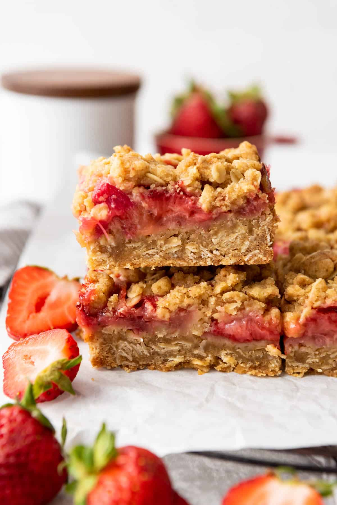

Strawberry Rhubarb Crumble

Summary
This recipe stood out to me while browsing for the perfect Strawberry Rhubarb Pie. Patiently waiting for me to click on it in the corner and show me something even better than pie. It was the best first recipe I will be listing and I can feel my mouth watering just typing this. Below is the recipe for this amazing looking delight. I hope you all enjoy it as much as I do.
Ingredients
- 11/2 cups of all-purpose flour
- 3/4 cup of salted butter
- 1/2 cup of granulated sugar
- 1/2 cup of packed light brown sugar
- 1/3 cup of granulated sugar
- 11/2 cupes of old-fashioned rolled oats
- 2 cups of chopped strawberries
- 11/2 cups of 1/2-inch sized chopped rhubarb
- 1 tablespoon of lemon juice
- 2 teaspoons of pure vanilla extract
- 1 tablesppon of cornstarch
- 1/4 teaspoon of salt
- 1/2 teaspoon of baking soda